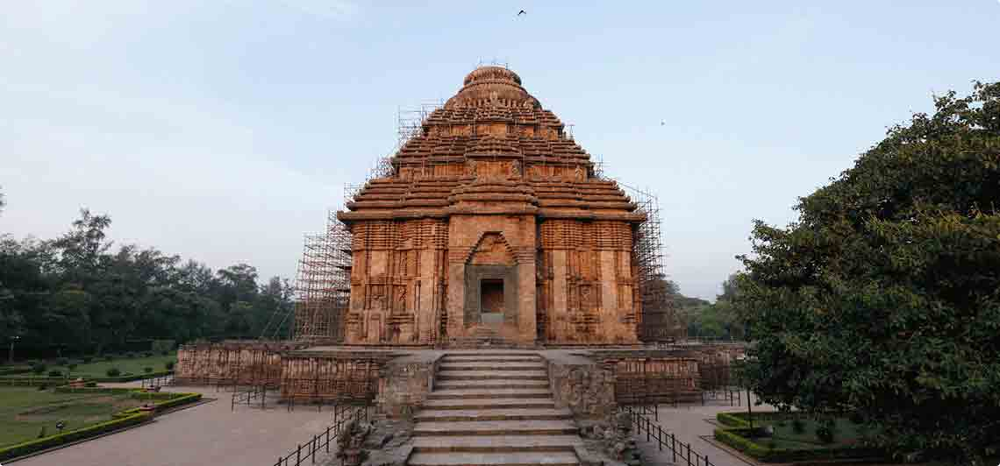
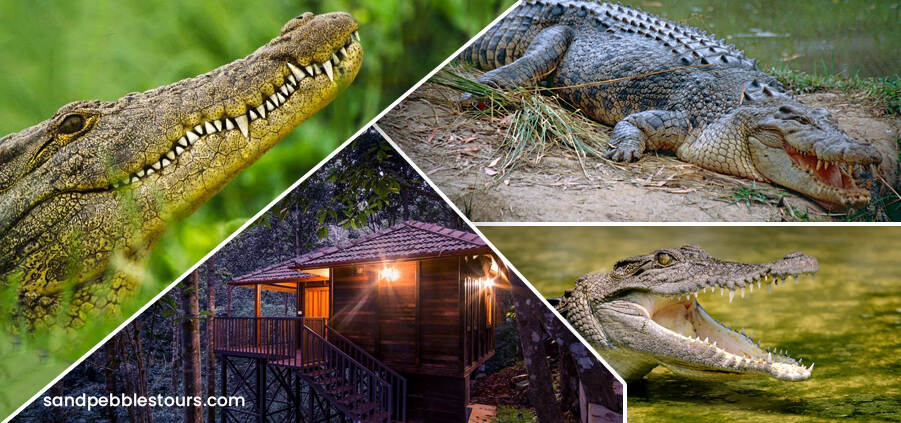
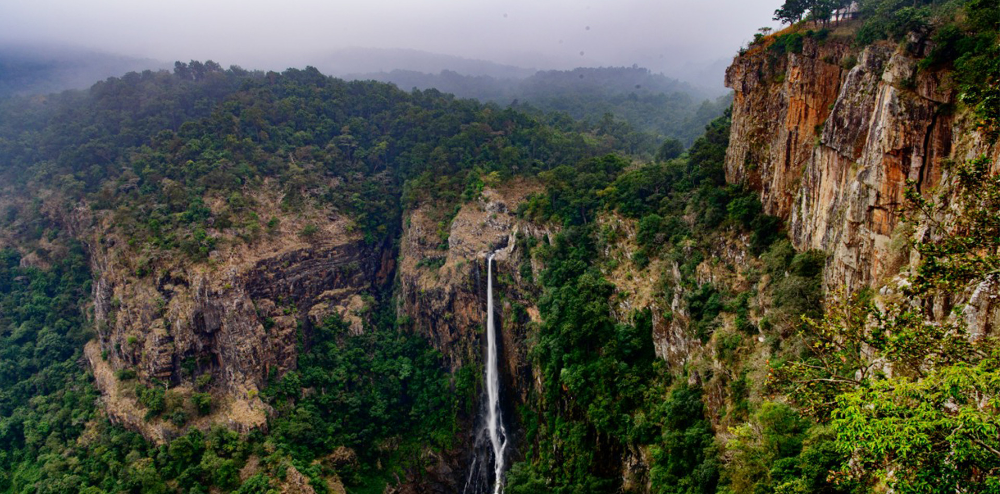

The Jagannath Temple is an important Hindu temple dedicated to Jagannath, a form of Vishnu - one of the trinity of supreme divinity in Hinduism. Puri is in the state of Odisha, on the eastern coast of India. The present temple was rebuilt from the tenth century onwards, on the site of pre existing temples in the compound but not the main Jagannatha temple, and begun by Anantavarman Chodaganga, the first king of the Eastern Ganga dynasty.The Puri temple is famous for its annual Ratha Yatra, or chariot festival, in which the three principal deities are pulled on huge and elaborately decorated temple cars. Unlike the stone and metal icons found in most Hindu temples, the image of Jagannath (which gave its name to the English term 'juggernaut') is made of wood and is ceremoniously replaced every twelve or 19 years by an exact replica. It is one of the Char Dham pilgrimage sites.The temple is sacred to all Hindus, and especially in those of the Vaishnava traditions. Many great Vaishnava saints, such as Ramanujacharya, Madhvacharya, Nimbarkacharya, Vallabhacharya and Ramananda were closely associated with the temple. Ramanuja established the Emar Mutt near the temple and Adi Shankaracharya established the Govardhan Math, which is the seat of one of the four Shankaracharyas. It is also of particular significance to the followers of Gaudiya Vaishnavism, whose founder, Chaitanya Mahaprabhu, was attracted to the deity, Jagannath, and lived in Puri for many years.
Konark Temple
Konark Sun Temple is a 13th-century CE (year 1250) Sun temple at Konark about 35 kilometres (22 mi) northeast from Puri city on the coastline in Puri district, Odisha, India.The temple is attributed to king Narasimhadeva I of the Eastern Ganga dynasty about 1250 CE.Dedicated to the Hindu Sun God Surya, what remains of the temple complex has the appearance of a 100-foot (30 m) high chariot with immense wheels and horses, all carved from stone. Once over 200 feet (61 m) high, much of the temple is now in ruins, in particular the large shikara tower over the sanctuary; at one time this rose much higher than the mandapa that remains. The structures and elements that have survived are famed for their intricate artwork, iconography, and themes, including erotic kama and mithuna scenes. Also called the Surya Devalaya, it is a classic illustration of the Odisha style of Architecture or Kalinga architecture.The cause of the destruction of the Konark temple is unclear and still remains a source of controversy.Theories range from natural damage to deliberate destruction of the temple in the course of being sacked several times by Muslim armies between the 15th and 17th centuries. This temple was called the "Black Pagoda" in European sailor accounts as early as 1676 because it looked like a great tiered tower which appeared black. Similarly, the Jagannath Temple in Puri was called the "White Pagoda". Both temples served as important landmarks for sailors in the Bay of Bengal. The temple that exists today was partially restored by the conservation efforts of British India-era archaeological teams. Declared a UNESCO world heritage site in 1984, it remains a major pilgrimage site for Hindus, who gather here every year for the Chandrabhaga Mela around the month of February.Konark Sun Temple is depicted on the reverse side of the Indian currency note of 10 rupees to signify its importance to Indian cultural heritage.

Lingaraj Temple
Lingaraja Temple is a Hindu temple dedicated to Shiva and is one of the oldest temples in Bhubaneswar, the capital of the Indian state of Odisha, India. The temple is the most prominent landmark of Bhubaneswar city and one of the major tourist attractions of the state.The Lingaraja temple is the largest temple in Bhubaneswar. The central tower of the temple is 180 ft (55 m) tall. The temple represents the quintessence of the Kalinga architecture and culminating the medieval stages of the architectural tradition at Bhubaneswar.The temple is believed to be built by the kings from the Somavamsi dynasty, with later additions from the Ganga rulers. The temple is built in the Deula style that has four components namely, vimana (structure containing the sanctum), jagamohana (assembly hall), natamandira (festival hall) and bhoga-mandapa (hall of offerings), each increasing in the height to its predecessor. The temple complex has 50 other shrines and is enclosed by a large compound wall.Bhubaneswar is called the Ekamra Kshetra as the deity of Lingaraja was originally under a mango tree (Ekamra) as noted in Ekamra Purana, a 13th-century Sanskrit treatise. The temple is active in worship practises, unlike most other temples in Bhubaneswar. The temple has images of Vishnu, possibly because of the rising prominence of Jagannath sect emanating from the Ganga rulers who built the Jagannath Temple in Puri in the 12th century. The central deity of the temple, Lingaraja, is worshipped as ShivaLingaraja temple is maintained by the Temple Trust Board and the Archaeological Survey of India (ASI). The temple has an average of 6,000 visitors per day and receives lakhs of visitors during festivals. Shivaratri festival is the major festival celebrated in the temple and event during 2012 witnessed 200,000 visitors. The temple compound is not open to non-Hindus, but there is a viewing platform beside the wall offering a good view of the main exteriors. This was originally erected for a visit by Lord Curzon when Viceroy.
Udayagiri and Khandagiri Caves
Udayagiri and Khandagiri Caves, formerly called Kattaka Caves or Cuttack caves, are partly natural & partly artificial caves of archaeological, historical and religious importance near the city of Bhubaneswar in Odisha, India. The caves are situated on two adjacent hills, Udayagiri and Khandagiri mentioned as Kumari Parvata in the Hathigumpha inscription. They have a number of finely and ornately carved caves built during the 1st century BCE.It is believed that most of these caves were carved out as residential blocks for Jain monks during the reign of King Kharavela.Udayagiri means "Sunrise Hill" and has 18 caves while Khandagiri has 15 caves.The caves of Udayagiri and Khandagiri, called lena or leṇa in the inscriptions, these were taken out mostly during the reign of Kharavela for the abode of Jain ascetics. The most importance of this group was Ranigumpha in Udayagiri which is a double storeyed monastery. Other important caves include Hathi Gumpha, Ananta Gumpha, Ganesha Gumpha, Jaya Vijaya Gumpha, Mancapuri Gumpha, Bagha/Byaghra/Vyaghra Gumpha and Sarpa Gumpha.
Dhauligiri
Dhauligiri Hills is a place marked with the serenity of Daya River and lies at a distance of 8 Km from Bhubaneswar. The famous rock edicts of Ashoka are worth witnessing. Moreover, it is in Dhauli Hills that adopted the path of dharma which lets only peace and love enter your lives. The concept of dharma- vijay became his ultimate goal as he took Buddhist teachings deep into his heart. The end of the bloody battles was only to serve and favor mankind. With this, the religious and spiritual beliefs of Buddhism spread to different parts of the world. Dhauli Hills in Bhubaneswar takes you to the site of the Vishwa Shanti Stupa. The dome structure of the Shanti Stupa possesses five umbrellas and they symbolize the five essential parts of Buddhism.
Ratnagiri
Ratnagiri is the site of a ruined mahavihara, once the major Buddhist monastery in modern Odisha, India. It is located on a hill in between the Brahmani and Birupa rivers in Jajpur district. It is close to other Buddhist sites in the area, including Lalitagiri and Udayagiri, and 100 km (62 mi) from the state capital Bhubaneswar and 70km from the former state capital Cuttack. The Buddhist monuments were constructed from the 5th century CE onwards, with the last work in the 13th century, and the peak period of work done between about the 7th to 10th centuries. After perhaps the 16th century the site ceased to be used and fell into ruins. These were little known until the 1960s when major campaigns of excavations by the Archaeological Survey of India ("ASI") revealed the site, producing large quantities of very fine sculpture. Monastery 1 has been described as "the finest in terms of carved stone decoration to have survived in India". Some of this was removed to museums elsewhere, with much left on site. A museum at the site has recently been opened to house many pieces.
Jirang
The Padmasambhava Mahavihara Monastery also known as Thupten Mindolling Monastery located at Jeerango, Gajapati district, in the state of Odisha, India, as the main monastery belonging to the Ripa Lineage. It is said to be the largest Buddhist monastery in Eastern India. It was inaugurated by the Dalai Lama in January 2010.It is built in the Atanpuri style of architecture of Nalanda by architects from Tibet, Nepal and Bhutan assisted by local masons. It is 70 feet (21 m) and five stories high, and is built on 10 acres (40,000 m2) of land. It features a 23 feet (7.0 m) high Buddha statue and a 17 feet (5.2 m) Buddha Padmasambhava. Around 200 monks are resident in the monastery, which is named after Acharya Padmasambhava (who was born in Oddiyana), who is believed to have spread Buddhism to Tibet in the 7th Century. This is a school for Tibetan studies and there are students staying and reading different courses here. The five-storey monastery has a huge meditation shrine hall and other small temples, institute and hostels inside the well spread-out complex. There is an old temple located at left side of main entrance of the temple.
Puri Beach
Puri Beach or the Golden beach is a beach in the city of Puri in the state of Odisha, India. It is on the shore of the Bay of Bengal. It is known for being a tourist attraction and a Hindu sacred place.The beach is the site of the annual Puri Beach Festival, which is co-sponsored by the Indian Ministry of Tourism, the city of Puri, the Development Commissioner of Handicrafts, and the Eastern Zonal Cultural Center, Kolkata.The beach hosts sand art displays, including work by international award-winning local sand artist Sudarshan Pattnaik.The Golden Beach at Puri was awarded the prestigious 'Blue Flag' tag on October 11, 2020 by the Foundation for Environment Education (FEE), Denmark.
Chandrabhaga Beach
Chandrabhaga Beach is situated three km east of the Sun temple of Konark, in the Puri district in the state of Odisha, India.[1] It is 30 km from the city of Puri. Formerly Chandrabhaga was considered a place of natural cure for lepers. Chandrabhaga beach on the coast of Konark becoming India's first to get the Blue Flag certification — a tag given to environment-friendly clean beaches, equipped with amenities of international standards for tourists.It is believed that Samba (Krishna's son) after curing leprosy worshiped the Sun God on the river mouth of Chandrabhaga, the river dried up. It is reduced to a dry bed or a narrow trickle. It has been[when?] an ideal place for religious activity. According to another ancient narrative reference, Chandrabhag, the daughter of a sage, caught the attraction of the Sun God by her magical charm. The God came down to seek her hand in love. Chandrabhaga did not offer herself to the God. Maddened by romantic pangs, the God chased after a frightened Chandrabhaga, who jumped into the river and killed herself, thus succeeding in protecting her chastity. As a mark of tribute to her sacrifice, every year on the 7th day of the full-moon fortnight of Magha month, people from all over the state and outside gather to take a holy dip in the river that is reduced to a shallow pool, to offer their prayers to the Sun God and to enjoy the sunrise.Chandrabhaga coral reef, is one of the prominent living corals reef of India offshore from Chandrabhaga beach.
Paradip Beach
Located 125 Km from the capital city Bhubaneswar, Paradip is one of the most important commercial ports of the country. The beach with green forest cover, natural creeks and an island is one of the most popular beaches of the state.Clear blue waters surrounded by green forest cover and its location at the confluence of the river Mahanadi with Bay of Bengal, makes Paradip one of the most sought after beaches of the state. A leisurely drive along the marine drive with the setting sun in the horizon is one of the highlights of this beautiful beach destination of Odisha. The sight of huge cargo ships anchored in the port always entices the photographers for that one perfect shot for posterity.
Odisha State Museum
The genesis of the Odisha State Museum goes back to the year l932, when two notable Historians, Prof. N.C. Banerjee and Prof. Ghanshyam Dash of Ravenshaw College, Cuttack started collection of archaeological treasures from various places. The small Museum was then housed within the premises of the College. In l938, by a suitable order, the Government of Odisha transformed this nucleus into the Provincial Museum of Odisha and appointed Committee of Management consisting of the Principal, the Head of the Department of History and three other Professors of the College.Maintaining close contact with the general public and the Archaeological Department of the Government of India and other States, the Museum continued to grow. In order to popularize the cultural exhibits of the Museum, leaflets printed both in Odia and English were published in the Samaj and the New Odisha and copies of the same were sent to officials and the public to create a sense of awareness about the significance of the Museum. As a result of this publicity, students and the general public started visiting the Museum in large numbers. The teachers of the History Department made sustained efforts to explain to them the cultural value of the Museum and its exhibits.
Odisha State Maritime Museum
The museum is by far millennium city Cuttack’s best tourist attraction. The maritime museum came up in the old dilapidated complex of “River Boat Construction and Repair Workshop” constructed during the British era. The workshop was renovated and renovated and converted into the present day Odisha State Maritime Museum in 2013.The exhibits of the museum give an insight into the ancient Odisha’s famed maritime industry. On display are the tools used by the Sadhabas (or seafarers), age old navigation systems and its evolution.The chief attractions are the wooden boat replica’s, the huge boat shed and the lathe which was the largest in Asia during its time. The addition of the 3D shows along with the aquarium section to the museum is a huge draw especially for the kids. The museum located on the banks of River Mahanadinear Jobra along with its finely manicured and maintained lawns makes for a pleasant outing with family. The museum regularly conducts painting competitions for children regularly which attracts a lot of participants and the interactive initiatives adds to the feel good factor about the place. It also has an open air auditorium with a sitting capacity of 250 people.
Bhitarkanika Nature Camps
Bhitarkanika is India’s second largest mangrove ecosystem after the Sunderbans. The National park is essentially a network of creeks and canals which are inundated with waters from rivers Brahmani, Baitarani, Dhamra and Patasala forming a unique ecosystem.Bhitarkanika is home to the largest congregation of the endangered Salt Water Crocodile in the country. The Salt Water Crocodile is the apex predator of the region, besides it, the park is home to numerous reptiles like the water monitor lizard, pythons to name a few. Bhitarkanika is also home to numerous animals like the deer, hyenas, wild boar etc and migratory birds which make it their home during the winter season lending a vibrant hue to the eco system.The other unique phenomenon is the Bagagahana or the heronry near Surajpore creek. Thousands of birds colonise the creek for nesting and the aerial acrobatics performed prior to the mating makes for an impressive sight. Bhitarkanika is also home to eight varieties of Kingfisher birds which is also a rarity. The erstwhile hunting porch of the Maharaja adds to its heritage value.

Satkosia Nature Camp
The Mahanadi flowing through a gorge stretching 22 KM makes for an awe inspiring sight. The Satkosia Tiger Reserve encompasses an area of 963.87 Sq KM, once it was a part of AbhayaAranya (Unending Forest range) which connected Odisha to Central India.The name Satkosia literally means 7 Kos (a unit of distance measurement. Usually 1 Kos – 1.3 KM depending on the region). It is also known as the Gorge Sanctuary. The place is bursting with flora and fauna and is a coveted destination for the nature lovers.Satkosia Tiger Reserve hosts some of the attractive tourism destinations with night stay at multiple points within the sanctuary, each showcasing a unique characteristics of this beautiful haven.
Similipal Nature Camp
Located in Mayurbhanj, Northern Odisha, Similipal Tiger Reserve is a place where Nature binds you with its awe inspiring beauty, grace, power and its calmness. The Similipal Tiger Reserve which covers an area of 2750 Sq KM is Odisha’s foremost wildlife sanctuary.Similipal is named after red silk cotton semul trees, which are found abundantly in the region. The Tiger Reserve also boasts of a huge variety of wild orchids which lends a romantic charm to the forest. The magnificent Joranda, Baharepani and other smaller water falls waterfalls leaves one spellbound & the majestic Royal Bengal Tiger gives the Tiger Reserve the character which fits perfectly with the settings.Similipal is amongst the first nine designated tiger reserves that were established in 1973. Recently probably for the first time ever a rare Melanistic Tiger or Black Tiger was discovered in Similipal.The forests is moist deciduous forest (Monsoon forest) in nature and the twelve rivers feed the jungles of Similipal. The meandering rivers through the hills of the forest cascades down to create the magnificent Baheripani waterfall, where the water drops from a height of 400-metre and Joranda waterfall, where the water drops from a height of 150 meters. All in all Similipal offers a wholesome package for the nature enthusiasts.

Chilika Nature Camps
Every year as winter sets in millions of migratory birds from different parts of world i.e Siberia, Russia etc. flock the lake making Chilika as the largest wintering ground for birds in the subcontinent.The beauty of Chilika has enamoured tourists and writers alike. To enable tourists to savour the serene beauty of Asia’s largest brackish water lagoon at the Dept of Tourism and Forest Department has set up accommodation facilities at the following places- Pathanivas at Barkul and Rambha . Nature Camps at Berhampura, Rajhans and Mangalajodi.Quacks and calls fill the fresh air pervading ones’ consciousness.It also boasts of a significant population of Irrawaddy Dolphin which is the highest recorded inland population in the world. One can see groups of Dolphin diving and swimming during boating near Rajhans Nature Camp.Chilika is a hotspot of biodiversity and has been designated as Wetland of International importance and a RAMSAR Site. It is the biggest breeding place for Flamingos in the World. The major species of colorful birds that can be witnessed are White bellied sea eagles, Gray lag geese, purple moor hen, flamingo jacana, herons, Brahminy ducks, Pintails etc.